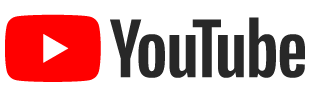

Ad Scriptorium Publisher
Service information for the channel owner.

This separate attribution identifies the destination used by the publishing integration. It does not imply that YouTube endorses or operates this private tool.
This publishing tool runs on the channel owner’s computer and is not offered as a public website or service. It has no public sign-up, user accounts, or public login page. The public pages here document the tool and its data handling; they do not provide access to the backend.
What it does
The owner uses the local tool to publish and update videos on their own channels, including video metadata, localized titles and descriptions, thumbnails, and caption tracks. The owner initiates publishing actions from the local interface. Audio dubbing files are uploaded separately in YouTube Studio.
Access
There is no public endpoint for the backend. Access is limited to the owner on the local computer. Authentication with Google is performed through Google’s OAuth consent flow; the tool does not ask for or store Google account passwords.
Read the privacy policy and terms of use.